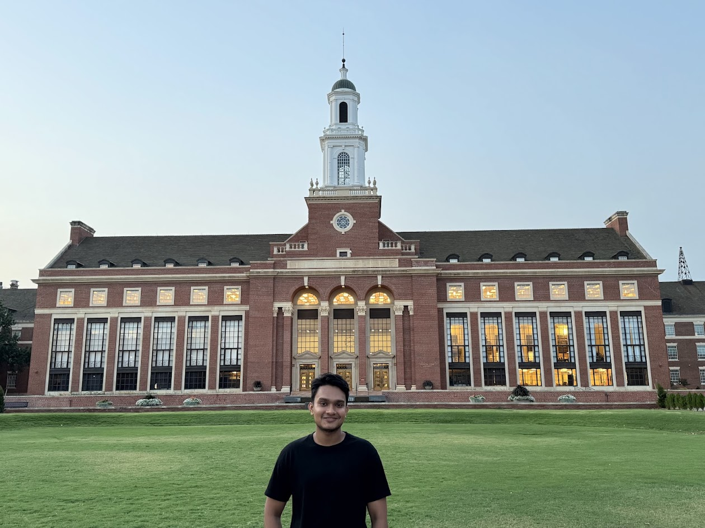
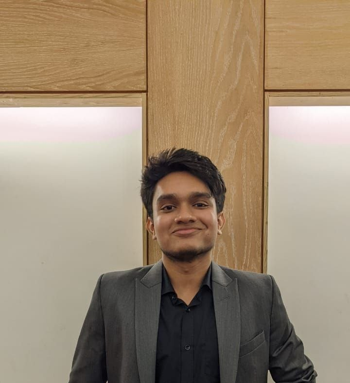

Mechanical engineering · Oklahoma State University
Zidan
Mohiuddin.
Advanced manufacturing.
Experimental tribology.
Materials. Mechanical design.

About me
Engineering, from materials
to working prototypes.
I am a mechanical engineer pursuing an M.S. at Oklahoma State University, working with Dr. Pranjal Nautiyal in the Extreme Interfaces Laboratory. My interests span materials development, manufacturing, and experimental testing.
My research connects how materials are made, how they behave, and how they can be used. I work with layered ceramics and the ultrathin, two-dimensional materials derived from them. I prepare these ultrathin materials with small, controlled changes in their structure to understand how those changes affect their properties and wear. I also explore new manufacturing approaches to turn these materials into thin films and coatings, bringing together materials preparation, testing, and process development.
I earned my B.Sc. in Mechanical Engineering from Bangladesh University of Engineering and Technology (BUET). I enjoy designing components, building prototypes, and using testing to understand and improve their performance.
- Advanced manufacturing
- Experimental tribology
- Materials
- Mechanical design
Contact
Let’s connect.
- Phone
- +1 (405) 269-6683
- Office location
-
Engineering South, 4th Floor, Desk 50
Oklahoma State University
Stillwater, OK 74078
United States Campus map ↗